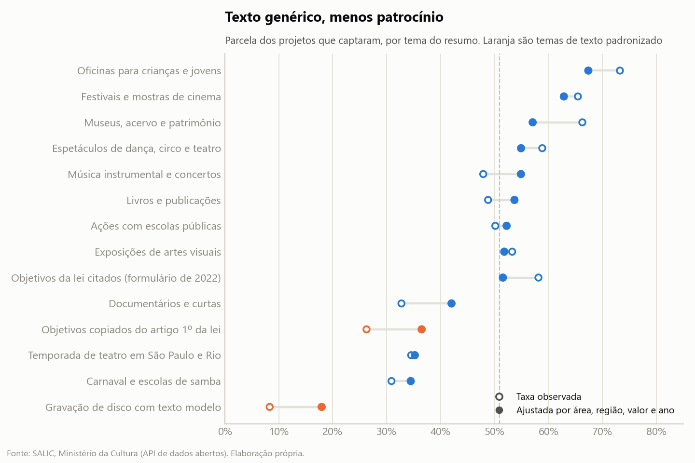

Eduardo
Vieira

Sou cientista político e analista de dados em São Carlos. Transformo bases públicas, redes sociais e muito texto em números que dá para usar numa decisão.
Sobre
Faço o trabalho inteiro. Coleto os dados, limpo, analiso em Python e entrego um painel ou um relatório curto que alguém de fora da área consegue ler.
Minha formação é em ciências sociais, com mestrado em ciência política na UFSCar. Na prática, isso me deixa desconfiado do número fácil. Antes de calcular, quero saber o que o indicador deveria medir e o que a base deixa de fora.
Também passei anos lendo e codificando texto, de editoriais de jornal a comentários do YouTube. Por isso, avaliação de cliente, chamado de SAC e resposta aberta de pesquisa são para mim dados como qualquer outro.
O indicador oficial pode enganar
No Consumidor.gov.br, o índice oficial de solução é 81%. Entre os consumidores que avaliaram o atendimento, só 44% dizem que o problema foi resolvido.
A base pode esconder o que falta
A taxa de captação da Lei Rouanet parecia ser 23% porque misturava projetos que ainda estavam captando. Olhando só os de prazo encerrado, ela é 52%.
Texto também é dado
Em 13 mil resumos de projetos culturais, os que copiam o texto da lei captam 26%, contra 51% na média. No mestrado, a codificação em equipe teve alfa de Krippendorff de 0,94.
Dados do SALIC, Ministério da Cultura
Lei Rouanet
1% dos proponentes ficou com metade de todo o patrocínio captado.
Juntei 63 mil projetos pela API do SALIC para ver quem consegue patrocínio. O dinheiro segue a sede das empresas e 74% vai para o Sudeste, que tem 42% da população.
Depois li o resumo de 13 mil projetos. Quem capta fala de continuidade e de programação anual. Quem copia o texto da lei ou usa um modelo pronto capta bem menos.
Python, API, modelos de tópicos, regressão logística, Power BI

Dados do Consumidor.gov.br, Senacon
Responder não é resolver
As empresas respondem 97% das reclamações. Resolvem 44%, na avaliação de quem reclamou.
Tratei 2,3 milhões de reclamações de 2025. Bancos e financeiras recebem 43% delas e resolvem 31%. O índice oficial da plataforma conta como resolvida toda reclamação sem avaliação, e por isso parece tão alto.
Python, pandas, construção de indicadores

Dados abertos do BNDES
24 anos de BNDES
O crédito chegou a 4,2% do PIB em 2009 e caiu para 0,5% em 2019.
São 2,4 milhões de operações desde 2002, corrigidas pela inflação. As microempresas fazem 42% das operações e levam 6% do valor.
Python, parquet, correção pelo IPCA, séries históricas

Os três projetos estão num painel com filtros.
Abrir o painelPesquisa
Trabalho com comunicação política, imprensa e redes sociais, quase sempre em equipe. Nos projetos em andamento conto a base e o método, sem resultados.
- CCI/CEBRAP
Influenciadores políticos no YouTube e no Instagram
Comentários de 14.016 vídeos de 9 canais, métricas de público e gastos com anúncios políticos na Meta.
Coleta em Python com a API do YouTube. Bases compartilhadas com o grupo, com padrão documentado.
- Observa
Conflito político no Instagram
Posts de perfis de direita e de esquerda sobre os temas de cada semana.
Codificação por tipo de conflito e relatórios semanais curtos.
- Projeto contratado
Rede de candidatos
Conexões entre candidatos de uma eleição.
Análise de redes, sob confidencialidade.
- Mestrado, PPGPol/UFSCar
Editoriais sobre reformas econômicas
Folha, Estadão e O Globo sobre 14 reformas, de 1995 a 2025.
Livro de códigos próprio, MAXQDA e IRAMUTEQ, confiabilidade entre codificadores.
- TCC, UFSCar, FAPESP
Cobertura dos ministros do governo Bolsonaro
Textos dos três jornais sobre os ministros.
Análise de valência. Virou a base do mestrado e um trabalho na ABCP.
- Artigo, RBCS
O rótulo de "fake news" contra a imprensa
137 trechos das Lives de Quinta, de 2019 a 2022.
Codificação em MAXQDA com recodificação independente, alfa de 0,94.
Ferramentas
Coleta
APIs públicas, raspagem, downloads grandes com retomada. Python e requests.
Tratamento
Bases de milhões de linhas, correção monetária, cruzamento com IBGE e Banco Central. pandas, parquet, R, Excel e VBA.
Análise
Indicadores, comparação entre grupos, regressão e redes. statsmodels, scikit-learn e R.
Texto
Livros de códigos, codificação em equipe, modelos de tópicos e testes com modelos de linguagem. MAXQDA e IRAMUTEQ.
Apresentação
Gráficos, painéis e relatórios curtos. Power BI, matplotlib, ggplot2 e HTML.
Ensino
Cursos de análise de conteúdo no MQ-UFMG, na Compolítica, no PPGCOM-UFMT, no PPGP-UFPA e no LABPOL.
Publicações
- A imprensa sob ataque. O autoritarismo populista de Bolsonaro a partir das Lives de QuintaRevista Brasileira de Ciências Sociais, no prelo. Com Beatriz Becerra e Gleidylucy Oliveira da Silva.
- Análise textual e abordagens qualitativas em Ciência PolíticaCapítulo em manual da Enap, 2024. Com Gleidylucy Oliveira da Silva.
- Paralelismo programáticoCongresso da ALACIP, Buenos Aires, 2026. Apresentado em espanhol.
- Cobertura editorial dos ministros do governo Bolsonaro15º Encontro da ABCP, UFPA, 2026.
Formação
Mestrado em Ciência Política, PPGPol/UFSCar, bolsista CAPES. Ciências Sociais na UFSCar, com iniciação científica FAPESP.
Grupos
Pesquisador colaborador do CCI/CEBRAP. Membro do DECOS e do LIDEPS, na UFSCar.
Gestão
Representante discente do PPGPol de 2025 a 2026 e organização da VII Semana de Ciência Política da UFSCar.
Contato
Estou aberto a vagas e projetos em análise de dados, pesquisa e inteligência de mercado.
edu.pagnanvieira@gmail.com